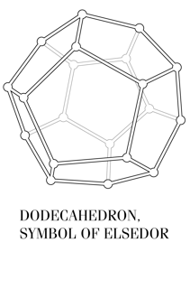
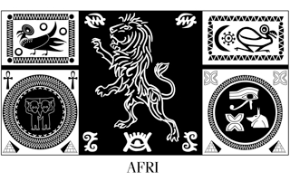
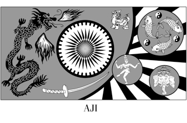
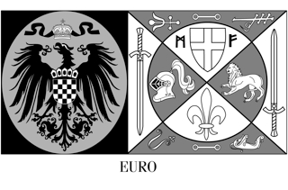
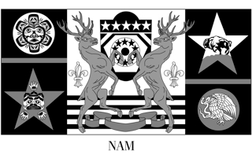
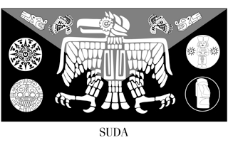

Inside the story
What happens when Wizards take over the world, uniting five continents and vowing a better utopia for all?
Seeking liaisons to their new subjects--Mortals as the Wizards call them--the new rulers seek five humans, one per continent. For North America, it's Amanda Fullerton who is chosen by the ruling quartet of Wizards--Indie, Demus, Regi, and Justica.The Wizards revere several mystic tenets of their civilization, one of them being competitions of magic, which demand cunning and strength. As such, the Wizard Games offer Amanda insight into their ways, as she seeks to learn about the Wizards as much as possible, but this incredible magic also brings danger.
Caught between the Wizards and the Mortals, Amanda finds herself playing both sides until the day arrives when the fate of the entire world is at stake. And in her hands.
Kindle: http://www.amazon.com/Deadly-
Kobo: https://store.kobobooks.com/

To see in full, click on any image below and view the slideshow:
 |
 |
 |
 |
 |
 |